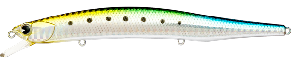
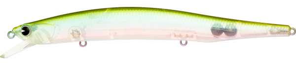
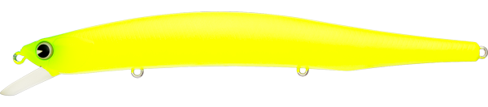

ナバロン150F
（NABARONE 150F）
ナバロン150F（NABARONE 150F）はima（アイマ）のフローティングミノーです。
アイマがDUOと共同開発した「NABARONE」の限定復刻モデル。よく飛び、強い流れの中でもしっかり泳ぐ"万能ミノー"で、公式でも「ビッグフィッシュを獲るハイポテンシャルミノー」と紹介されています。さらなる大物を狙いたい時や、より飛距離が必要な場面で頼れる150mmモデルです。

画像出典:アイマ公式HP
スペック
- メーカー
- ima（アイマ）
- タイプ
- フローティングミノー
- 全長
- 150mm
- 自重
- 23g
- レンジ
- 50〜150cm
- アクション
- ウォブンロール
- フック
- #3
- リング
- #3
- カラー
- 全8色
- ターゲット
- シーバス
- 推奨エリア
- 磯・サーフ・河口
- 価格
- 2,970円（税込）
▼今すぐチェック

ナバロン150Fの特徴
アイマ×DUOの共同開発で生まれた、よく飛びよく泳ぐ「万能ミノー」の大物狙いモデル
-
アイマとDUOの共同開発、限定復刻のミノー
ナバロンは、アイマとDUOがタッグを組んで開発したミノー。2009年に誕生したモデルで、根強い人気から限定で復刻されている。限定生産のため、見つけたら早めに手に入れておきたい。
-
よく飛び、強い流れでもしっかり泳ぐ
飛距離と、強い流れの中でも破綻しにくい泳ぎを両立した"万能ミノー"。アクションはウォブンロールで、レンジは50〜150cm。シャローランナーより一段下のレンジを、流れに負けずに引いてこられる。
-
大物と飛距離が必要な場面の150mm
ナバロンは125Fと150Fの2サイズ。125Fは磯・河川・干潟と場所を選ばず使え、150Fはさらなる大物を狙いたい時や、より飛距離が必要なシチュエーションで出番になる。
ナバロン150Fの使い方
基本はただ巻き。キャストしたら一定速度で巻き、ウォブンロールで50〜150cmのレンジを引いてくる。流れの中でもしっかり泳ぐので、河口や磯では流れに対してクロスに投げ、流れの変化を感じながら巻くのが基本だ。
飛距離を活かして沖のブレイクや潮目まで届かせ、レンジの入るフローティングミノーで広く探っていきましょう。反応がない時は、巻き速度を落としてレンジを浅めにしたり、ドリフトで流れに乗せたりと変化をつけるのが効果的です。
ナバロン150Fの得意な状況
磯・サーフ・河口で、沖のポイントまで届かせながら大型のシーバスを狙う状況が最大の出番。
流れが強い河口や、波のある磯・サーフでも泳ぎが破綻しにくいので、「よく飛んで、少し潜るミノー」が欲しい場面で選びたい1本です。
ワンポイント
限定復刻のため、アイマ公式ショップでは品切れになっていることがあります。釣具店や通販の在庫もあわせてチェックしてみてください。
もう少し小さいシルエットで食わせたい時や、干潟・河川など浅めの場所では、同じナバロンの125Fを使い分けると組み立てやすくなります。
オススメカラー
ナバロン150Fは全8色展開。シーバス狙いでオススメのカラーを厳選して紹介します。

#X5502 グラデイワシイワシを模したリアルなベイトカラー。澄んだ潮や日中のナチュラルな展開に。

#X5503 カタクチゴースト透け感のあるカタクチイワシカラー。プレッシャーが高く、見切られやすい場面に。

#X5496 レッドヘッドパール定番のレッドヘッド。白いパールボディで、夜や濁りでもシルエットを見せやすい。

#X5498 マットチャート強い濁りやローライトで目立つマットチャート。朝夕マズメのパイロットカラーに。
画像出典:アイマ公式HP
ナバロン150Fに似ているルアー
-
 タイドミノーゴースト150F
DUO
詳細はこちら＞
タイドミノーゴースト150F
DUO
詳細はこちら＞
DUOの150mmフローティングミノー。重心移動のDバレットシステムで、強風下でも飛距離を出したい大場所の大物狙いで選択肢が重なる。
-
 ザブラシステムミノー15F
ジップベイツ
詳細はこちら＞
ザブラシステムミノー15F
ジップベイツ
詳細はこちら＞
同じ150mmクラスの復刻フローティングミノー。キビキビ感を抑えた餌っぽい泳ぎで、スレた大物に口を使わせたい時に。
-
 カゲロウ155F
メガバス
詳細はこちら＞
カゲロウ155F
メガバス
詳細はこちら＞
マグナムサイズのシャローランナー。ナバロン150Fより浅いレンジを、大きなシルエットで引きたい時に。